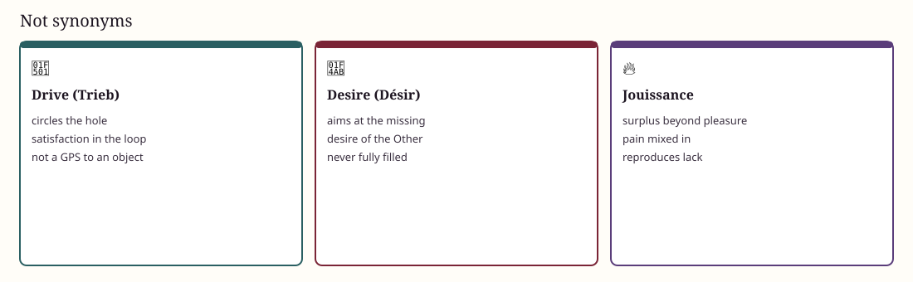

Not a need, not an instinct
Desire and drive
Need can be satisfied. Demand is spoken to the Other. Desire is what is left. Drive is the repetitive push around a hole.
Desire is the desire of the Other: I want to be wanted, and my want is formatted by the Other’s signifiers. Drive does not arrive; satisfaction is in the circuit. That is why “just stop” is not a theory of change.
